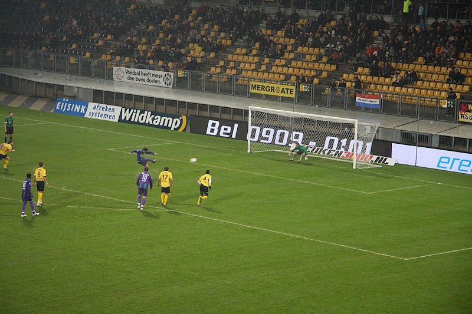

Nadat Ger Senden de actie Fans voor Fans promootte werden vanaf west gele en
zwarte ballonnen losgelaten.
Berg kopt in uit een corner. De Jong probeert hem nog uit de kruising te
koppen. 0-1, (3').
Verdediger Granqvist glijdt een voorzet van Linssen in eigen doel: 1-1,
(47').
De discutabele scheidsrechter Van Boekel kent Groningen een strafschop toe
na een overtreding van Kah op Ajilore.
Castro vliegt naar links, de bal vliegt naar rechts. Berg scoort opnieuw:
1-2, (50').
Na knullig balverlies van Hadouir wordt Berg door Lovre diep gestuurd. De
spits lobt de bal over Castro: 1-3, (55').
Onder de invaliden-tribune pakken ontevreden supporters zich samen.
Nog meer rampspoed. De Fauw heeft hands gemaakt. De protesten ten spijt
wijst Van Boekel opnieuw naar de stip.

De bal vliegt naar links, Castro vliegt naar rechts: 1-4, (60'). Ook deze
treffer is van Berg.
Toch nog vijftig blijen in deze trieste wedstrijd.
Matondo kopt de bal voorbij Da Silva: 2-4, (73').
Even later kopt Matondo de bal bijna opnieuw binnen.
Roda is te laat ontwaakt en ondanks amechtige pogingen....
... is het niet Roda, maar Groningen dat opnieuw scoort uit een counter.
Saeijs kan Ajilore niet meer afstoppen: 2-5, (87').
Mauks vriendin toont haar Fans voor Fans SCC.
Deze supporters omarmen een denkbeeldige speler. Vanavond vertoonde zich
geen enkele speler in de Kickoff.
Bij de rotonde in Koningsbosch is het prijs: alcoholcontrole. Dankzij ons
bekroonde stadionBaf-bier komen we met de schrik vrij.
Afbieren in Posterholt om de ellendige uitslag weg te drinken.